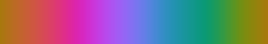

⏹ Arendal (3)
The GRID-Arendal Maps & Graphics Library is an on-going project to collect and catalogue all graphic
products that have been prepared for publications and web-sites from the last 15 years in a wide range of
themes related to environment and sustainable development.
| arctic🔻 |
temperature🔻 |
zambesi🔻 |
|
 |
 |
⏹ Cividis (1)
The cividis colormap, designed to give the most accurate perception of scientific data by as many viewers
as possible. The “authors:” J. R. Nuñez, C. R. Anderton and R. S. Renslow give details on the design and
motivation in their 2016 article, Optimizing colormaps with consideration for color vision deficiency to
enable accurate interpretation of scientific data. PLoS ONE 13(7) (doi).
| cividis🔻 |
 |
⏹ Cmocean (22)
Kristen M. Thyng of Texas A&M University's Department of Oceanography has developed this collection of
colour-palettes for commonly-used oceanographic variables.
Detailed notes on the design of the palettes and their motivation can be found on the project page for the
matplotlib package for cmocean, or in the paper Thyng, K.M., Greene, C.A., Hetland, R.D., Zimmerle, H.M., &
DiMarco, S.F. True colors of oceanography Oceanography, 29(3), 9–13, 2016 (available here).
| algae🔻 |
amp🔻 |
balance🔻 |
 |
 |
 |
| curl🔻 |
deep🔻 |
delta🔻 |
| |
|
 |
| dense🔻 |
diff🔻 |
gray🔻 |
| |
|
 |
| haline🔻 |
ice🔻 |
matter🔻 |
| |
 |
 |
| oxi🔻 |
phase🔻 |
rain🔻 |
| |
 |
 |
| solar🔻 |
speed🔻 |
tarn🔻 |
 |
 |
 |
| tempo🔻 |
thermal🔻 |
topo🔻 |
 |
 |
|
| turbid🔻 |
|
|
| |
 |
|
⏹ Em (1)
A palette by Erika Mackay of the New Zealand National Institute of Water & Atmospheric Research.
⏹ Gery (1)
A scheme for amplitude values from seismic data, created with GMT from a grid file of amplitude values from
a SEG-Y file.